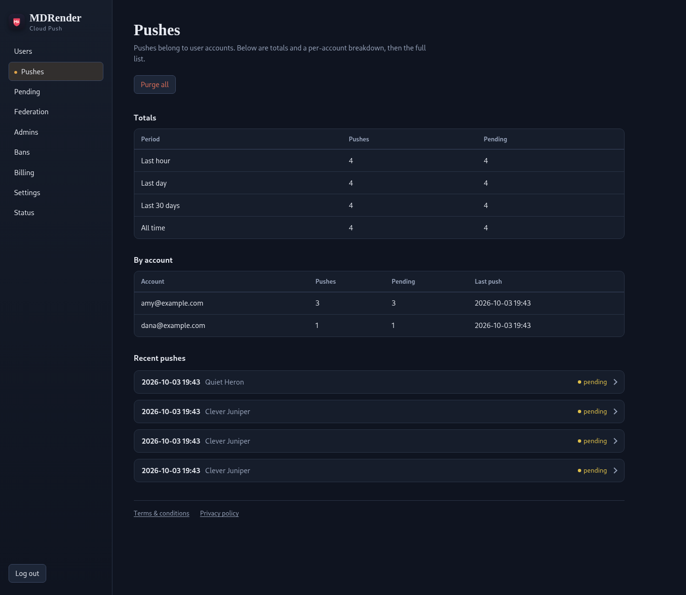
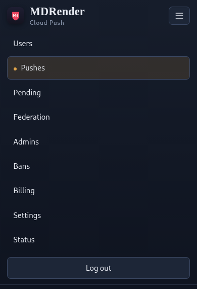
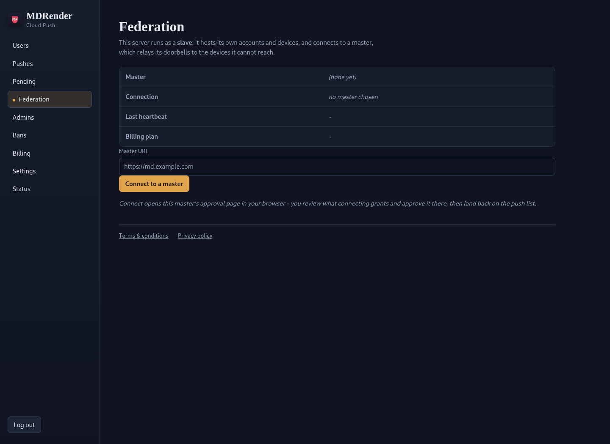

Documents that move between your own devices.
MDRender is an open-source Android document viewer with encrypted storage. The app works on its own: run standalone with the client and app on the same LAN to transfer files seamlessly from your system to your phone for review, using the common LocalSend protocol — or the included LocalSend client with some additional features. Connect to the Cloud Push Server to send files to a device anywhere. Set up and run your own server for complete privacy and security.


Three pieces, each useful alone
The app
An encrypted reader for Android: folders, Markdown, images, audio, and peer-to-peer transfers on your network. No account, no server, no connection required.
About the appThe clients
mdrender-send for Linux, Windows, and macOS pushes files
straight to a phone over your LAN — or enrols once and reaches it from
anywhere through your server.
The server
One Docker container you run: pair devices with a QR code, host pending downloads, link servers into a federation that registers with the cloud push master — which sees only a wake-up ping, never your data. It only ever holds what you told it to hold.
Run your own serverHow a file reaches your pocket
-
Pair (optional)
Open
/pairin a browser and scan the QR with the app. The token is single-use and expires in minutes; the phone registers its own public keys and keeps them in the Android Keystore. Skip this and everything local still works. -
Send
From a script or desktop,
mdrender-sendtalks to the phone directly on the LAN. Point it at your server instead and the same command works from anywhere — encrypted to the device when the server demands it. -
Open
The phone verifies the signed manifest, downloads the file, and decrypts it on the device. A server with encryption mode on stores only the sealed blob — it relays bytes it cannot read.
Where it fits
- Specs and reviews from your coding agents
- You manage AI coding and support agents remotely — through herdr or tmux attached via MuxPod. When an agent writes a spec, a review, or a support investigation, a skill pushes the document straight to MDRender on your phone — read and approve it there before the spec is implemented or the fault is rectified.
- Read later, on the right screen
- Push a PDF, report, or chapter from your desk browser to the phone in your pocket before you leave — it waits in the encrypted library until you open it.
- A drop box that isn't a cloud drive
- Give a family member or client a server account and they can push files to a paired device you chose, without anyone hosting your documents for you.
- Scripts that talk to your pocket
- Enrol CI jobs, backup scripts, or a NAS once; they push build logs and artefacts to a named device wherever the device is.
- Two offices, one delivery path
- Run a server at each site and federate them: pushes land on either server and still reach the paired phone — each box registers with the master so its doorbells are delivered through one shared setup.
- Same room, no server
- Built-in LocalSend discovers devices on the local network and transfers directly, with a PIN — nothing in between, no account, works offline.
- Push as a service
- Host one server for a group or customer base and charge prepaid credit: accounts, plans, per-device quotas, and gates that close when the balance does.
Run your own federated server
Your devices. Your clients. Your pending downloads. Host the whole thing yourself — one container, one volume — and keep the privacy of files that never touch a third party: your box registers with the cloud push master, but the master only ever sees a wake-up ping — no data leaves your server. Use the master directly and encryption seals every file end-to-end, so not even its operator can see file names or contents.
